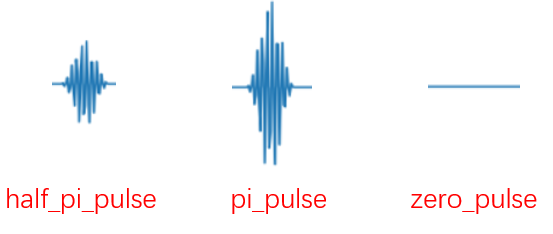
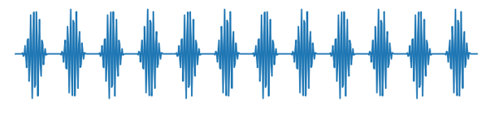

开发指南¶
这是针对希望维护/扩展pyQCat的开发人员的指南。当你希望自定义新的实验时，你同样可以使用pyQCat，我们提供丰富的接口足以让你实现全新的实验。
顶层接口¶
pyQCat中提供了实验顶层接口和结果分析顶层接口供你调用，当你需要开发全新的实验时，建议你提前了解TopExperiment和TopAnalysis接口以及它的使用方式。
实验顶层接口TopExperiment¶
pyQCat中所有的实验都可以继承TopExperiment类实现通用的功能，它包括绑定设备初始参数、参数校验、施加波形、绘制波形等功能，详细内容可以参考API文档。
如果你想要自定义一个完整的实验，你必须提前实例化下面一些对象：
inst： 设备对象Instrument，封装了实验参数的设置方法，集成了各种数据交互操作。它帮助你完成脉冲信号的施加并接受量子比特返回的数据。
qubits： 量子比特对象Qubit，定义了量子比特的常见参数，自动化校准流程的核心对象。它支持多比特实验，只需要你以元组的形式传入比特对象即可。
当然，通常比特测试实验需要更丰富的功能，我们为你提供了丰富的参数选项：
compensate: 波形校准对象PulseCorrection，用来进行校准波形。
discriminator: IQ分类器对象IQdiscriminator，用来获取P0和P1的值 。
correct_dc: 施加到比特上的电压。
repeat: 实验重复次数。
label: 用来自定义实验名称。
schedule_type: 绘制脉冲时序图的类型，有
envelop和sequence两种选择
此外还支持多读取通道的实验，你可以通过multi_readout_channels属性传入多通道列表。
实验结果分析顶层接口TopAnalysis¶
执行实验之后，我们提供了通用的实验结果分析类TopAnalysis，你可以继承它实现一些通用的功能，同时扩充一些你需要的功能，详细内容可见API文档，当你实现新的实验时，你可以继承 TopAnalysis 定义新实验的结果分析类来实现具体的结果分析操作。它的初始化需要下面的参数：
id_: TopExperiment对象的id属性，用来进行绑定实验。
data_type (str): 数据类型，只能设置为
amp-phase和I-Qdiscriminator： 如果你想接受
I-Q数据，你必须将TopExperiment中定义的discriminator传递给分析类is_dynamic(int): 是否启用动态绘图，默认为1，开启动态绘图
file_sys: 连接实验结果存储文件类，默认从
TopExperiment对象的file属性中获取fidelity_matrix (np.ndarray): 保真度矩阵，用来校准测量结果。当你输出了 fidelity_matrix, 同时你需要传入 measure_qubits 来规定测量的比特
自定义实验¶
简单模板¶
所以当你需要实现新的实验时，可以分别定义TopExperiment和TopAnalysis搭建基础实验框架，一般会为每个单独的实验绑定一个独立的分析模块，结构如下：
from pyQCat.experiment import TopExperiment, TopAnalysis
# 定义新的实验
class NewExperiment(TopExperiment):
# 运行实验
def run(self):
# 绑定实验结果分析接口
self.analysis = NewExperimentAnalysis(self.id)
pass
# 定义新的实验结果分析类
class NewExperimentAnalysis(TopAnalysis):
# 实验结果分析
def analyze(self, *args, **kwargs):
pass
在新的实验中你需要关注TopExperiment中run()方法和TopAnalysis中analyze()方法的实现逻辑。
run方法¶
run方法中，你需要实现的逻辑有下面几点：
① 为实验生成结果存储路径，你只需要调用TopExperiment中现有的方法config_file_sys()即可；
② 构造施加到比特上的脉冲信息，我们在 pulse 模块下面定义了常用波形的构造方法，可供你使用；
③ 施加生成的脉冲信息到指定比特上，你只需要调用TopExperiment中现有的方法play_pulse()即可；
④ 注册实验，支持amp_phase和I_Q两种格式的数据形式，你只需要调用TopExperiment中现有的方法register()即可；
⑤ 绑定自定义的实验结果分析类，用来处理数据，你可以去 top_analysis 模块寻找指南；
⑥ 绘制脉冲时序图，你只需要调用TopExperiment中现有的方法plot_schedule()即可；
⑦ 循环执行实验，获取实验结果，你只需要调用TopAnalysis中现有的方法excute_loop()即可；
我们以Ramsey实验为例，来演示一下具体的逻辑：
def run(self, delay_list: List, fringe: float, zamp: float = None, schedule_index: int = 20):
"""Ramsey实验执行函数"""
# ① 为实验生成结果存储路径，直接调用config_file_sys()即可，你可传入字符串类型name属性
if zamp:
name = f'zamp={round(zamp, 5)}v'
else:
name = 'zamp=0v'
self.config_file_sys(name)
# ② 获取施加到比特上的脉冲信息，一般有 XY 线和 Z 线，你需要自己实现
xy_pulse_list = self.get_xy_pulse(self.qubit, delay_list, fringe)
# ③ 施加生成的脉冲信息到指定比特上，你可以直接调用play_pulse()方法将脉冲加到比特上
self.play_pulse("XY", self.qubit, xy_pulse_list)
if zamp is not None:
z_pulse_list = self.get_z_pulse(self.qubit, delay_list, zamp)
self.play_pulse("Z", self.qubit, z_pulse_list)
# ④ 注册实验，支持amp_phase和I_Q两种格式的数据形式；
if self.discriminator is not None:
data_type = "I_Q"
else:
data_type = "amp_phase"
# 直接调用父类的register()方法即可
self.register(data_type)
# ⑤ 绑定自定义的实验结果分析类，用来处理数据；
self.analysis = RamseyAnalysis(self.id, data_type, delay_list, self.discriminator, self.file)
# ⑥ 自动调用父类 plot_schedule 方法绘制脉冲时序图
self.plot_schedule(xy_index=schedule_index)
# ⑦ 获取并分析数据，调用 TopAnalysis 的 excute_loop 方法循环执行实验并接受数据
self.analysis.excute_loop()
根据上述的逻辑，当你实现简单的单比特实验时，我们只需要做两件事，一个是实现构建波形的代码，另一个是绑定实验结果分析类，我们在后面的内容会给出更详细的解释。当然如果实验不需要给某条线施加脉冲，你可以忽略构造波形的操作。
除此之外，你可以在run方法定义时，传入实验需要扫描的参数，如比特Ramsey实验扫描延时时间，Rabi实验扫描幅值等，这些扫描参数你都可以作为run()方法的参数传入。
生成实验结果存储路径¶
在实验运行的第一步，我们往往需要为实验生成结果存储路径，你只需要调用TopExperiment中现有的方法config_file_sys()即可，它会为你生成一个进行文件操作的对象SaveFile ，方便你将实验结果存储到指定的路径。简单的一行代码如下：
class NewExperiment(TopExperiment):
def run(self, *args):
"""实验执行函数"""
# ① 为实验生成结果存储路径，直接调用config_file_sys()即可，你可传入字符串类型name属性
self.config_file_sys()
# ② 获取施加到比特上的脉冲信息，一般有 XY 线和 Z 线，你需要自己实验
# ③ 施加生成的脉冲信息到指定比特上，你可以直接调用play_pulse()方法将脉冲加到比特
# ④ 注册实验，支持``amp_phase``和``I_Q``两种格式的数据形式；
# ⑤ 绑定自定义的实验结果分析类，用来处理数据；
# ⑥ 自动调用父类 plot_schedule 方法绘制脉冲时序图
# ⑦ 接受实验数据
上面的方法会默认以 类名 + 时间生成结果存储路径，当然如果你想扩展路径名称，你可以提供 name 属性，它会在时间后面新增你想生成的名称；
class NewExperiment(TopExperiment):
# 运行实验
def run(self, *args, **kwargs):
self.config_file_sys('TowQubitRB')
pass
构造波形¶
案例：
我们以Rabi振荡实验构造波形方法为例，Rabi振荡实验可以通过扫描幅值找出XY线上脉冲的最优幅值，同时也可以扫描脉冲的宽度，来判断比特频率是否准确，他的实现逻辑中并不涉及Z线的波形，因此你只需要构造XY线上的波形，Z线上的波形我们默认为0。它的代码为：
def _get_drive_pulse(self, type_: str, sweep_list: List):
# get pulse
for param in sweep_list:
# 扫描幅值
if type_ == "Xpi":
pulse = pi_pulse(self.qubit)
pulse.amp = param
elif type_ == "Xpi/2":
pulse = half_pi_pulse(self.qubit)
pulse.amp = param
# pulse *= 2
# 扫描带宽
elif type_ == "width":
pulse = pi_pulse(self.qubit)
pulse.time = param
pulse.detune = 0
else:
raise NameError
pulse.get_pulse()
yield pulse
波形调用：
构造波形一般你需要提供扫描参数，这些参数与波形生成有关，我们在 Pulse模块 提供了丰富的波形构造方式，你可以直接进行调用，我们定义了六种常用的波形类：

图中红色表示施加到Z线上的波形，绿色表示施加到XY线上的波形，黄色为读取线路波形。
此外，我们还对经常使用的波形进行了封装，他们波形可以从图中看出。
pi_pulse: 比特反转波形
half_pi_pulse: 比特反转一半的波形
zero_pulse: 0波形

对于pi_pulse、half_pi_pulse、zero_pulse波形，我们进行封装，你可以直接通过输入Qubit比特对象生成脉冲波形，如：
pulse1 = pi_pulse(self.qubit)
pulse2 = half_pi_pulse(self.qubit)
pulse3 = zero_pulse(self.qubit)
生成波形数值序列：
当你生成波形之后，你必须指定统一的方法 get_pulse（）方法，实现波形数值序列的计算，他会保存在脉冲的 pulse 属性中，如：
pulse1 = pi_pulse(self.qubit)
# 生成数值序列
pulse1.get_pulse()
# 获取波形数据
pulse_data = pulse1.pulse
波形拼接：
在pyQCat中波形拼接非常简单，你只需要将脉冲对象当成数字进行加法 + 或者乘法 * 操作即可，如SpinEcho实验中需要进行波形拼接，你完全可以这样操作:
front_drag = half_pi_pulse(qubit)
front_drag.get_pulse()
front_delay = Constant(delay, 0)
front_delay.get_pulse()
mid_drag = pi_pulse(qubit)
mid_drag.get_pulse()
rear_delay = Constant(delay, 0)
rear_delay.get_pulse()
rear_drag = half_pi_pulse(qubit)
rear_drag.get_pulse()
final_pulse = front_drag + front_delay + mid_drag + rear_delay + rear_drag
它会生成下面的波形：
当然乘法操作也是支持的，比如:
pulse = pi_pulse(qubit)
new_pulse = pulse * 12
它会生成下面的波形：

波形构造代码逻辑：
上面已经介绍了波形构造的方法，你可以按照下面的结果生成你希望的波形
class NewExperiment(TopExperiment):
def run(self, *args):
"""实验执行函数"""
# ① 为实验生成结果存储路径，直接调用config_file_sys()即可，你可传入字符串类型name属性
# ② 获取施加到比特上的脉冲信息，一般有 XY 线和 Z 线，你需要自己实现
xy_pulse_list = self.get_xy_pulse(self.qubit, sweep_list)
z_pulse_list = self.get_z_pulse(self.qubit, sweep_list)
# ③ 施加生成的脉冲信息到指定比特上，你可以直接调用play_pulse()方法将脉冲加到比特
# ④ 注册实验，支持``amp_phase``和``I_Q``两种格式的数据形式；
# ⑤ 绑定自定义的实验结果分析类，用来处理数据；
# ⑥ 自动调用父类 plot_schedule 方法绘制脉冲时序图
# ⑦ 接受实验数据
def get_xy_pulse(self, qubit, *args, **kwargs):
"""获取 XY 线上的脉冲"""
...
pulse.get_pulse()
...
return pulse_list
def get_z_pulse(self, qubit, *args, **kwargs):
"""获取 Z 线上的脉冲"""
...
pulse.get_pulse()
...
return pulse_list
施加波形¶
当波形构建完成之后，你可以直接调用封装好的方法 play_pulse() 进行波形施加，你只需要选择 XY 或者 Z 决定脉冲施加的位置，当然你需要提供比特对象qubit和具体的脉冲信息pulse，就像下面的例子
class NewExperiment(TopExperiment):
def run(self, *args):
"""实验执行函数"""
# ① 为实验生成结果存储路径，直接调用config_file_sys()即可，你可传入字符串类型name属性
# ② 获取施加到比特上的脉冲信息，一般有 XY 线和 Z 线，你需要自己实验
# ③ 施加生成的脉冲信息到指定比特上，你可以直接调用play_pulse()方法将脉冲加到比特
self.play_pulse("XY", self.qubit, xy_pulse_list)
self.play_pulse("Z", self.qubit, z_pulse_list)
# ④ 注册实验，支持``amp_phase``和``I_Q``两种格式的数据形式；
# ⑤ 绑定自定义的实验结果分析类，用来处理数据；
# ⑥ 自动调用父类 plot_schedule 方法绘制脉冲时序图
# ⑦ 接受实验数据
注册实验¶
注册实验是实验正常运行的关键，它实现了修正波形、注册波形、更新数据库映射等诸多操作。你不要关注它的具体逻辑，你只需要调用 TopExperiment 中的 register()方法即可实现。
当然，你需要关注 register() 方法中的 data_type 属性， 他表示实验结果分析类型，可选择 amp_phase 或 I_Q, 默认为 amp_phase 类型。当选择 amp_phase 类型时，实验结果返回幅值和相位信息，且从设置的重复实验次数中取平均值返回； 当选择 I_Q 类型时，会根据 IQ 分类器对实验结果进行分析，形成当前比特处在0态的概率 P0 和处在1态的概率 P1 的形式返回结果，并且会返回与扫描参数相等规模的 P0-P1 数据。当你选择的注册类型为 I-Q 时，你必须提供 IQdiscriminator对象。
class NewExperiment(TopExperiment):
def run(self, *args):
"""实验执行函数"""
# ① 为实验生成结果存储路径，直接调用config_file_sys()即可，你可传入字符串类型name属性
# ② 获取施加到比特上的脉冲信息，一般有 XY 线和 Z 线，你需要自己实验
# ③ 施加生成的脉冲信息到指定比特上，你可以直接调用play_pulse()方法将脉冲加到比特
# ④ 注册实验，支持``amp_phase``和``I_Q``两种格式的数据形式；
data_type = "I_Q"
self.register(data_type)
# ⑤ 绑定自定义的实验结果分析类，用来处理数据；
# ⑥ 自动调用父类 plot_schedule 方法绘制脉冲时序图
# ⑦ 接受实验数据
绑定Analysis接口¶
当波形构建完成并施加完成之后，你需要实现获取数据的功能，那么这个时候你需要为你的实验绑定 TopAnalysis，前面介绍过TopAnalysis 的初始化参数，你需要关注的属性有
id_: TopExperiment对象的id属性，用来进行绑定；
data_type (str): 它决定了数据接受及呈现的方式；
sweep_list (List): 实验扫描参数，一般作为数据处理的
xdata;discriminator： 当你选择
I_Q数据类型时，必须提供IQ分类器；**is_dynamic (int): **默认开启动态绘图，如果你想加快实验速度，你可设置为0，关闭动态绘图；
file_sys: 刚才我们生成了结果存储路径，我们需要将它传递给实验结果分析类；
因此，如果你想将实验中某些参数传给实验结果分析类，你可以自定义新的实验结果分析类，通过重定义__init__的方式扩展它的属性，然后按照自己的逻辑进行绑定，下面给出了将 sweep_list 扫描参数传递给实验结果分析类的案例，当然 discriminator 属性你可以选择传入的值为 None。
定义新的实验结果分析类：
class NewExperimentAnalysis(TopAnalysis):
def __init__(self, experiment_id, data_type, sweep_list, discriminator: IQdiscriminator = None,
file_sys: SaveFile = None):
# 传递给TopAnalysis类
super().__init__(experiment_id, data_type, discriminator, file_sys=file_sys)
# sweep_list为当前实验独有属性，因此以这样的方式单独记录
self.x_list = sweep_list
实验类中run()方法的调用：
class NewExperiment(TopExperiment):
def run(self, *args):
"""实验执行函数"""
# ① 为实验生成结果存储路径，直接调用config_file_sys()即可，你可传入字符串类型name属性
# ② 获取施加到比特上的脉冲信息，一般有 XY 线和 Z 线，你需要自己实验
# ③ 施加生成的脉冲信息到指定比特上，你可以直接调用play_pulse()方法将脉冲加到比特
# ④ 注册实验，支持``amp_phase``和``I_Q``两种格式的数据形式；
# ⑤ 绑定自定义的实验结果分析类，用来处理数据；
self.analysis = NewExperimentAnalysis(self.id, data_type=data_type, sweep_list=sweep_list,
discriminator=self.discriminator, file_sys=self.file)
# ⑥ 自动调用父类 plot_schedule 方法绘制脉冲时序图
# ⑦ 接受实验数据
绘制脉冲时序图¶
如果你想检查脉冲时序图是否绘制正确，你可以直接调用 TopExperiment 中的 plot_schedule() 方法，它将帮助你生成输入脉冲图形，方便你进行波形检查，当然这个方法只是辅助你进行波形检查，如果你不想查看波形图，可以不需要调用此方法。
class NewExperiment(TopExperiment):
def run(self, *args):
"""实验执行函数"""
# ① 为实验生成结果存储路径，直接调用config_file_sys()即可，你可传入字符串类型name属性
# ② 获取施加到比特上的脉冲信息，一般有 XY 线和 Z 线，你需要自己实验
# ③ 施加生成的脉冲信息到指定比特上，你可以直接调用play_pulse()方法将脉冲加到比特
# ④ 注册实验，支持``amp_phase``和``I_Q``两种格式的数据形式；
# ⑤ 绑定自定义的实验结果分析类，用来处理数据；
# ⑥ 自动调用父类 plot_schedule 方法绘制脉冲时序图
self.plot_schedule()
# ⑦ 接受实验数据
如Rabi实验中，我们可以用这个方法绘制脉冲时序图如下：
获取并分析数据¶
当你绑定了实验结果分析类之后，你就可以使用 TopAnalysis 中的方法了，我们给数据接受和分析过程进行了封装，你只需要调用 TopAnalysis 中的 excute_loop() 方法即调用数据接受和处理的逻辑。当然，它可以正常执行的前提是，你需要在你的 NewExperimentAnalysis 中定义 analysis() 方法，因为我们 excute_loop() 的实现逻辑中调用了 analysis() 方法
def excute_loop(self, func=None, args=None, *, analyze_one=None):
"""循环获取实验测量结果"""
...
# 用户自定义的 analysis() 方法
self.analyze()
而你的 run() 方法中只需在最终执行 excute_loop() 即可
class NewExperiment(TopExperiment):
def run(self, *args):
"""实验执行函数"""
# ① 为实验生成结果存储路径，直接调用config_file_sys()即可，你可传入字符串类型name属性
# ② 获取施加到比特上的脉冲信息，一般有 XY 线和 Z 线，你需要自己实验
# ③ 施加生成的脉冲信息到指定比特上，你可以直接调用play_pulse()方法将脉冲加到比特
# ④ 注册实验，支持``amp_phase``和``I_Q``两种格式的数据形式；
# ⑤ 绑定自定义的实验结果分析类，用来处理数据；
# ⑥ 自动调用父类 plot_schedule 方法绘制脉冲时序图
# ⑦ 接受实验数据
self.analysis.excute_loop()
analysis方法¶
analysis方法中，我们以单比特实验为例，你需要实验的逻辑有下面几点：
① 获取实验数据，我们提供了 single_qubit_usualness() 方法让你直接获取数据，避免繁琐的数据转化工作;
② 拟合实验数据，数据拟合方法需要自己去实现，我们在 formula 模块中定义了常用的拟合公式;
③ 绘制实验结果图需要根据不同的实验结果自定义，我们在 plot_data 模板中定义了常用的图像绘制工具供你调用。
我们以幅值优化实验AmpOptimize的analysis为例：
def analyze(self):
""" `AmpOptimize` 实验结果分析方法"""
# ① 获取实验数据
x, y0, y1, title0, title1, file_name = self.single_qubit_usualness()
# ② 拟合实验数据
if self.discriminator is None:
popt1, rmse1, fit_y1 = cosine_fit(x, y0)
index1 = np.argmax(fit_y1)
plot_y = y0
ylabel = "amp"
else:
popt1, rmse1, fit_y1 = cosine_fit(x, y1)
index1 = np.argmax(fit_y1)
plot_y = y1
*_, ylabel = title1.split("-")
self.Xpi_opt = self.x_list[index1]
# ③ 绘制实验结果图
f_name = f" theta = {self.theta:.5f}"
xlabel = "Amplitude"
line_labels = ["raw data", "fit data"]
plot_multiple(x, plot_y, fit_y1, xlabel=xlabel, ylabel=ylabel, line_labes=line_labels,
title=title1 + f"{f_name} Amp={self.Xpi_opt:.7f}", index=self.Xpi_opt, dir=self.file_path)
获取实验结果¶
我们在 TopAnalysis 中提供了单比特实验通用的数据接受函数 single_qubit_usualness()， 它会自动对实验数据进行解析，如果你的 discriminator 属性为空，它会给你返回 amp-phase 数据，如果不为空，它会给你返回 I-Q 数据，同时它会给你自动生成标题 title 信息。如果你按照这种方式，在分析类定义的时候，你必须提前绑定扫描参数 x_list ，而你只需要这样编写代码：
class NewExperimentAnalysis(TopAnalysis):
def __init__(self, experiment_id, data_type, sweep_list, discriminator: IQdiscriminator = None,
file_sys: SaveFile = None):
super().__init__(experiment_id, data_type, discriminator, file_sys=file_sys)
# 必须绑定扫描参数 sweep_list
self.x_list = sweep_list
# 实验结果分析
def analyze(self, *args, **kwargs):
# ① 获取实验数据
x, y0, y1, title0, *_, = self.single_qubit_usualness()
# ② 拟合实验数据
# ③ 绘制实验结果图
当然如果你不想用这种方式自动获取实验结果，你也可以自己编写获取数据的逻辑，就像下面这样：
def analyze(self):
# ① 获取实验数据
if self.discriminator is not None:
y0_list = self.P0
y1_list = self.P1
else:
y0_list = self.amp
y1_list = self.phase
# ② 拟合实验数据
# ③ 绘制实验结果图
拟合实验数据¶
如果你的数据需要进行拟合，则需要你自己去实验拟合逻辑了，当然我们也提供的一些模板供你参考：
你可按照下面的模板来实验数据处理逻辑：
class NewExperimentAnalysis(TopAnalysis):
def __init__(self, experiment_id, data_type, sweep_list, discriminator: IQdiscriminator = None,
file_sys: SaveFile = None):
super().__init__(experiment_id, data_type, discriminator, file_sys=file_sys)
# 必须绑定扫描参数 sweep_list
self.x_list = sweep_list
# 实验结果分析
def analyze(self, *args, **kwargs):
# ① 获取实验数据
x, y0, y1, title0, *_, = self.single_qubit_usualness()
# ② 拟合实验数据
fit_y0 = self._fit_fun(x, y0)
fit_y1 = self._fit_fun(x, y1)
# ③ 绘制实验结果图
# 拟合函数
def _fit_fun(self, x, y):
pass
绘制实验结果图¶
如果你需要绘制实验结果图，你可自行实现绘制图片的逻辑，当然我们也提供了一些绘图模板方法供你参考，你可以在plot_data模块中寻找。
你可按照下面的模板来编写绘制实验结果的逻辑：
class NewExperimentAnalysis(TopAnalysis):
def __init__(self, experiment_id, data_type, sweep_list, discriminator: IQdiscriminator = None,
file_sys: SaveFile = None):
super().__init__(experiment_id, data_type, discriminator, file_sys=file_sys)
# 必须绑定扫描参数 sweep_list
self.x_list = sweep_list
# 实验结果分析
def analyze(self, *args, **kwargs):
# ① 获取实验数据
x, y0, y1, title0, *_, = self.single_qubit_usualness()
# ② 拟合实验数据
fit_y0 = self._fit_fun(x, y0)
fit_y1 = self._fit_fun(x, y1)
# ③ 绘制实验结果图
self._plot_data(x, fit_y0, fit_y1)
# 拟合函数
def _fit_fun(self, x, y):
pass
# 绘制结果图片
def _plot_data(self, fit_y0, fit_y1):
pass
完整的实验模板¶
我们在上面完整的介绍了单比特实验实现的完整逻辑，模板总结如下：
from pyQCat.experiment import TopExperiment, TopAnalysis
from pyQCat.tool.iqprobability import IQdiscriminator
from pyQCat.tool.savefile import SaveFile
class NewExperiment(TopExperiment):
# 运行实验
def run(self, sweep_list):
self.config_file_sys()
# 获取波形，由用户自己实验
xy_pulse_list = self.get_xy_pulse(self.qubit, sweep_list)
z_pulse_list = self.get_z_pulse(self.qubit, sweep_list)
self.play_pulse("XY", self.qubit, xy_pulse_list)
self.play_pulse("Z", self.qubit, z_pulse_list)
data_type = "I_Q"
self.register(data_type)
self.analysis = NewExperimentAnalysis(self.id, data_type=data_type, sweep_list=sweep_list,
discriminator=self.discriminator, file_sys=self.file)
self.plot_schedule()
self.analysis.excute_loop()
def get_xy_pulse(self, qubit, *args, **kwargs):
"""获取 XY 线上的脉冲"""
pass
def get_z_pulse(self, qubit, *args, **kwargs):
"""获取 Z 线上的脉冲"""
pass
class NewExperimentAnalysis(TopAnalysis):
def __init__(self, experiment_id, data_type, sweep_list, discriminator: IQdiscriminator = None,
file_sys: SaveFile = None):
super().__init__(experiment_id, data_type, discriminator, file_sys=file_sys)
self.xdata = sweep_list
# 实验结果分析
def analyze(self, *args, **kwargs):
x, y0, y1, title0, *_, = self.single_qubit_usualness()
self._analyze_data(*args, **kwargs)
self._polt_data(*args, **kwargs)
def _analyze_data(self, *args, **kwargs):
# 拟合数据，分析数据
pass
def _polt_data(self, *args, **kwargs):
# 绘制结果
pass